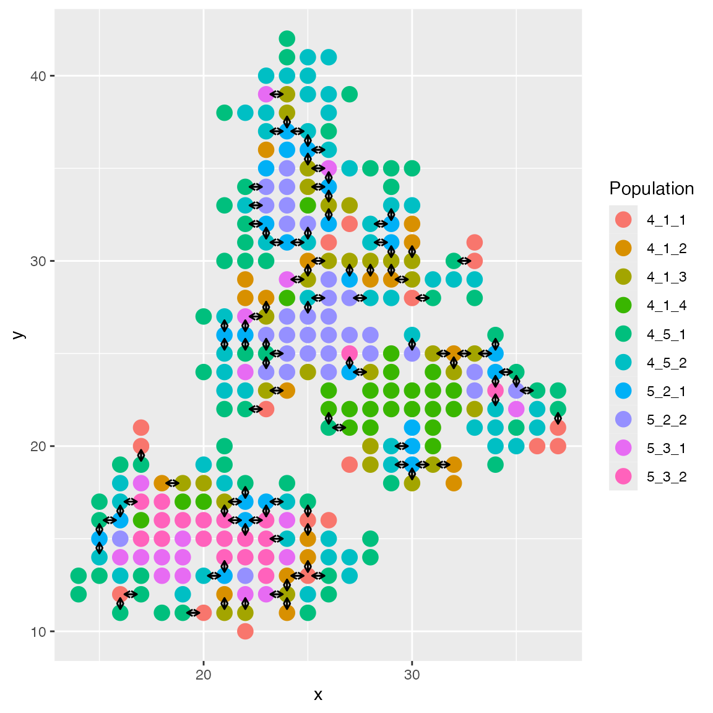
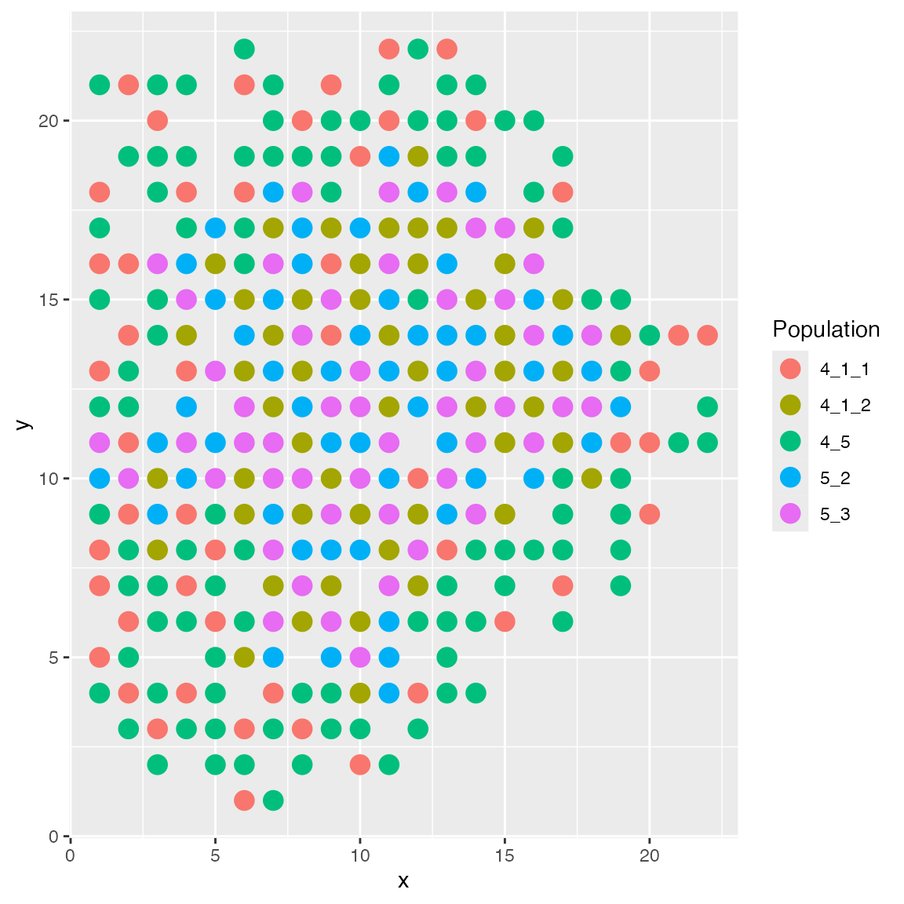

The following chunk will install all the required packages.
Simulating Spatial Cell-Cell Interactions
scMultiSim can simulate spatial cell-cell interactions. To do so, we
need to provide the cci option as a list. The following
code will print more instructions on how to use the cci
option.
library(scMultiSim)
scmultisim_help("cci")##
## To enable simulating cell-cell interaction, the value should be a list including
## the following names:
##
## - params: (data.frame)
## The spatial effect between neighbor cells.
## It should be a data frame similar to the GRN parameter.
## - grid.size: (integer)
## Manually set the width and height of the grid.
## - step.size: (number, optional)
## If using continuous population, use this step size to further divide the
## cell types on the tree. For example, if the tree only has one branch 1 -> 2
## and the branch length is 1 while the step size is 0.34, there will be totally
## three cell types: 1_2_1, 1_2_2, 1_2_3.
## - cell.type.interaction: ("random" or a matrix)
## The interaction level between different cell types.
## They act as factors multiplied to the ligand effect.
## Supply the string "random" to let scMultiSim generate these factors randomly.
## Otherwise, use cci_cell_type_params() to generate the template data structure.
## See the help of this method for more info.
## - cell.type.lr.pairs: (integer vector)
## If cell.type.interaction is "random", how many LR pairs should be enabled between each cell type pair.
## Should be a range, e.g. 4:6. The actual number of LR pairs will be uniformly sampled from this range.
## - max.neighbors: (integer from 1 to 4, optional)
## Constraint the maxinum number of neighbors with CCI for each cell.
## The neighbors with CCI will be randomly sampled.
## - layout: (character or function)
## Supported values are "enhanced", "layers", "islands", or a custom function.
## The custom function should take two arguments: (grid_size, cell_types)
## grid_size: (integer)
## The width and height of the grid.
## cell_types: (integer vector)
## Each cell's cell type.
## It should return a n_cell x 2 matrix, where each row is the x and y coordinates of a cell.
## - radius: (number or string)
## Controls the maximum distance between two cells for them to interact.
## When it is a number, it specifies the maximum distance.
## When it is a string, it should be in the format `gaussian:sigma`, for example, `gaussian:1.2`.
## In this case, the probability of two cells interacting is proportional to the distance with a Gaussian kernel applied.
## - start.layer: (integer)
## From which layer (time step) the simulation should start.
## If set to 1, the simulation will start with one cell in the grid and add one more cell in each following layer.
## ## NULLNow, we prepare a ligand-receptor interaction database. This is
pretty similar to the GRN network: it is a data frame with three
columns, specifying target, regulator, and
effect, respectively. The target and regulator columns
should contain the IDs of the target and regulator genes. In the
following example, we have two ligand-receptor pairs interacting between
two neighboring cells.
lig_params <- data.frame(
target = c(101, 102),
regulator = c(103, 104),
effect = c(5.2, 5.9)
)We can now simulate the spatial cell-cell interactions. In
scMultiSim, the CCI network is cell-type based, which means that between
each cell type pair, we can have a different CCI network sampled from
the database defined above. Here, we set the step.size to
0.5, so the differentiation tree is divided into segments of length 0.5,
each segment is treated as a cell type in CCI. We set
cell.type.interaction to random, so the CCI
network between each cell type pair is randomly sampled from the
database.
data(GRN_params_100)
options_ <- list(
rand.seed = 0,
GRN = GRN_params_100,
num.genes = 200,
num.cells = 300,
num.cifs = 50,
tree = Phyla3(),
intrinsic.noise = 0.5,
cci = list(
params = lig_params,
max.neighbors = 4,
cell.type.interaction = "random",
step.size = 0.5
)
)
results <- sim_true_counts(options_)## CCI simulation is enabled.
## Get CIF...100..200..300..Done
## Get params...Done
## Simulating...50..100..150..200..250..300..
## Time spent: 5.30 minsThe results$cell_meta will contain the cell type
information used in CCI. We can plot the cell spatial locations using
plotCellLoc(). The arrows indicate cell-cell interactions
between two cells (for the first ligand-receptor pair).
plot_cell_loc(results)
The cell locations are available in
results$cci_locs.
head(results$cci_locs)## x y
## cell1 26 26
## cell2 24 33
## cell3 30 22
## cell4 20 16
## cell5 24 27
## cell6 27 26Speeding up the Simulation
Simulating spatial cell-cell interactions can be computationally expensive. Setting these two options can speed up the simulation:
options_ <- list(
# ...
speed.up = T,
cci = list(
# ...
start.layer = ncells
)
)First of all, it is recommended to set the experimental
speed.up = T option. This option will become default in
later versions of scMultiSim.
Next, it is possible to set the CCI option
start.layer = n_cells, where n_cells is the
number of cells. scMultiSim simulates a spatial dataset by following
n_cells steps, adding one more cell to the spatial grid in
each step. Only the final step is outputted as the result. The CCI
option start.layer can be used to start simulation from a
specific time step. When set to n_cells, the simulation
will skip all previous steps by adding all cells at once. By default,
start.layer will be set to n_cells when number
of cells is greater than 800.
Spatial layouts
scMultiSim provides powerful customization options for spatial cell layouts.
Built-in layouts
scMultiSim ships with several built-in spatial layouts. The
enhanced layout is the default layout, where cells are
added to the grid one by one. When adding a new cell, it has a higher
probability of being placed near the existing cells of the same cell
type.
# helper function to add `layout` to options, to make the code more readable
spatial_options <- function (...) {
cci_opt <- list(
params = lig_params,
max.neighbors = 4,
start.layer = 300,
grid.size = 28,
cell.type.interaction = "random"
)
list(
rand.seed = 0,
GRN = GRN_params_100,
num.genes = 200,
num.cells = 300,
num.cifs = 50,
tree = Phyla3(),
cci = c(cci_opt, list(...))
)
}
results <- sim_true_counts(spatial_options(
layout = "enhanced"
))## CCI simulation is enabled.## Spatial: only the last layer will be simulated.## Get CIF...100..200..300..Done
## Get params...Done
## Simulating...300..
## Time spent: 0.42 mins
plot_cell_loc(results, show.arrows = FALSE)An option same.type.prob decides the probability of a
new cell being placed near the existing cells of the same cell type. By
default, it is 0.8; and if we use a lower value, the new cell will be
placed more randomly.
results <- sim_true_counts(spatial_options(
layout = "enhanced",
same.type.prob = 0.1
))## CCI simulation is enabled.## Spatial: only the last layer will be simulated.## Get CIF...100..200..300..Done
## Get params...Done
## Simulating...300..
## Time spent: 0.42 mins
plot_cell_loc(results, show.arrows = FALSE)
The layers layout arranges cells in layers.
results <- sim_true_counts(spatial_options(
layout = "layers"
))## CCI simulation is enabled.## Spatial: only the last layer will be simulated.## Get CIF...100..200..300..Done
## Get params...Done
## Simulating...300..
## Time spent: 0.41 mins
plot_cell_loc(results, show.arrows = FALSE)The islands layout will put some cell types in the
center like islands, and others around them. You may specify which cell
type should be islands in the format islands:1,2,3. The
number here can be looked up in results$cci_cell_types.
results$cci_cell_types## 4_5 5_2 5_3 4_1_1 4_1_2
## 1 2 3 4 5
results <- sim_true_counts(spatial_options(
# cell type 4_1_2 should be the island
layout = "islands:5"
))## CCI simulation is enabled.## Spatial: only the last layer will be simulated.## Get CIF...100..200..300..Done
## Get params...Done
## Simulating...300..
## Time spent: 0.41 mins
plot_cell_loc(results, show.arrows = FALSE)Custom layouts
It is also possible to layout the cells programmatically. The
layout option can be a function that takes the cell type
information and returns the spatial locations of the cells:
# grid_size is a number
# cell_types is an integer vector, representing the cell types
function(grids_size, cell_types) {
# return a matrix with two columns, representing the x and y coordinates of the cells
return matrix(nrow = 2, ncol = ncells)
}For example, the following layout function will place the cells sequentially in the grid, starting from the bottom-left corner.
results <- sim_true_counts(spatial_options(
layout = function (grid_size, cell_types) {
ncells <- length(cell_types)
new_locs <- matrix(nrow = ncells, ncol = 2)
# for each cell...
for (i in 1:ncells) {
# ...place it in the grid
new_locs[i,] <- c(i %% grid_size, i %/% grid_size)
}
return(new_locs)
}
))## CCI simulation is enabled.## Spatial: only the last layer will be simulated.## Get CIF...100..200..300..Done
## Get params...Done
## Simulating...300..
## Time spent: 0.41 mins
plot_cell_loc(results, show.arrows = FALSE)Spatial domains
Next, we demonstrate how to use custom layout function to create spatial domains. We want to have three spatial domains in a layered layout, and we have four cell types. Each cell type has a different probability of being in each domain.
The following layout function will do this job: First of all, it
generates a set of locations that form a circular shape. Next, it
assigns cells to these locations; the leftmost cell is selected as the
origin. Then, we can create a layered layout by sorting the locations
based on their euclidian distance to the origin. The three domains are
determined by the distance to the origin. We have a matrix
ct_matrix that specifies the probability of each cell type
being in each domain. Finally, we sample the cells based on the
probabilities and assign them to the domains.
layout_fn <- function(grid_size, final_types) {
ncells <- length(final_types)
grid_center <- c(round(grid_size / 2), round(grid_size / 2))
all_locs <- gen_clutter(ncells, grid_size, grid_center)
# center is bottom-left
left_ones <- which(all_locs[,1] == min(all_locs[,1]))
new_center <<- all_locs[left_ones[which.min(all_locs[left_ones, 2])],]
dist_to_center <- sqrt(colSums((t(all_locs) - new_center)^2))
new_locs <- all_locs[order(dist_to_center),]
# prob of a cell type being in a zone (cell_type x zone)
ct_matrix <- matrix(c(
0.9, 0.1, 0.0,
0.1, 0.8, 0.1,
0.1, 0.7, 0.2,
0.0, 0.1, 0.9
), nrow = 4, byrow = TRUE)
# number of cells per type
ct_pop <- c(160, 80, 100, 140)
pop_mtx <- round(ct_matrix * ct_pop)
if (sum(pop_mtx) != ncells) {
diffrence <- ncells - sum(pop_mtx)
pop_mtx[1, 1] <- pop_mtx[1, 1] + diffrence
}
# number of cells per zone
zone_pop <- colSums(pop_mtx)
# assign cells to zones
cs <- cumsum(zone_pop)
# sample cells
cell_idx <- lapply(1:3, function(izone) {
sample(rep(1:4, pop_mtx[,izone]), zone_pop[izone])
}) %>% unlist()
locs <<- new_locs[order(cell_idx),]
zone_gt <<- rep(1:3, zone_pop)[order(cell_idx)]
return(locs)
}Inspecting the result, we can see the three spatial domains, where the middle one contains a mix of two cell types.
results <- sim_true_counts(list(
num.cells = 500,
num.genes = 300,
num.cifs = 40,
GRN = NA,
speed.up = T,
cif.sigma = 0.8,
tree = ape::read.tree(text = "(A:1,B:1,C:1,D:1);"),
diff.cif.fraction = 0.8,
discrete.cif = T,
discrete.pop.size = as.integer(c(120,150,100,130)),
cci = list(
params = lig_params,
max.neighbors = 4,
start.layer = 500,
cell.type.interaction = "random",
layout = layout_fn,
step.size = 1
)
))## Experimental speed optimization enabled.## CCI simulation is enabled.## Spatial: only the last layer will be simulated.## Get CIF...Get params...Done
## Simulating...500..
## Time spent: 0.26 mins
plot_cell_loc(results, show.arrows = FALSE)Spatially variable genes
The ext.cif.giv option allows us to append custom CIF
and GIV entries for each cell and gene. We can use this option to
simulate spatially variable genes. This option should be a function that
takes the kinetic parameter index and returns a list of extra CIF and
GIV matrices.
scmultisim_help("ext.cif.giv")## ext.cif.giv (default: NA)
## Add customized CIF and GIV. The function takes one argument, the kinetic
## parameter index (1=kon, 2=koff, 3=s). It should return a list of two el
## ements: the extra CIF matrix (n_extra_cif x n_cells) and the GIV matrix
## (n_genes x n_extra_cif). Return NULL for no extra CIF and GIV.
## should be a functionUsing the previous layout function, we can add extra CIF with value based on the distance to the origin.
ext_cif <- function(i) {
# We manually set genes 290-300 to be spatially variable
spatial_genes <- 290:300
dist_to_center <- colSums((t(locs) - new_center)^2)
dist_to_center <- dist_to_center / max(dist_to_center)
# 3 is the s parameter
if (i == 3) {
# n_extra_cif x n_cells
ex_cif <- cbind(
# the two CIFs have large values when distance to the center is near 0.5
rnorm(500, 0.5 * dnorm(abs(dist_to_center - 0.5), 0, 0.04), 0.02),
rnorm(500, 0.5 * dnorm(abs(dist_to_center - 0.5), 0, 0.04), 0.02)
)
# n_genes x n_extra_cif
ex_giv <- matrix(0, nrow = 300, ncol = 2)
for (i in spatial_genes) {
# odd genes affected by the first two CIF, even genes affected by the last two CIF
ex_giv[i, ] <- rnorm(2, 1, 0.5)
}
list(ex_cif, ex_giv * 2)
} else {
NULL
}
}
results <- sim_true_counts(list(
num.cells = 500,
num.genes = 300,
num.cifs = 40,
GRN = NA,
speed.up = T,
cif.sigma = 0.8,
tree = ape::read.tree(text = "(A:1,B:1,C:1,D:1);"),
diff.cif.fraction = 0.8,
ext.cif.giv = ext_cif,
discrete.cif = T,
discrete.pop.size = as.integer(c(120,150,100,130)),
cci = list(
params = lig_params,
max.neighbors = 4,
start.layer = 500,
cell.type.interaction = "random",
layout = layout_fn,
step.size = 1
)
))## Experimental speed optimization enabled.## CCI simulation is enabled.## Spatial: only the last layer will be simulated.## Get CIF...Get params...Done
## Simulating...500..
## Time spent: 0.26 minsTry plotting one of the spatially variable genes. We can see that the gene expression is higher in the specific spatial region.
plot_cell_loc(results, show.arrows = FALSE,
.cell.pop = log(results$counts[299,] + 1)) + scale_colour_viridis_c()Long-distance Cell-Cell Interactions
scMultiSim also supports simulation of long-distance cell-cell interactions.
The CCI option radius controls the maximum distance
between two cells for them to interact. It can be a number or a string.
When it is a number, it specifies the maximum distance. When it is a
string it should be in the format gaussian:sigma, for
example, gaussian:1.2. In this case, the probability of two
cells interacting is proportional to the distance with a Gaussian kernel
applied.
By default, radius = 1, which means scMultiSim only
consider the four nearest neighbors.
We can compare the result with different sigma values 1 and 3:
options <- lapply(c(1, 3), \(sigma) {
list(
rand.seed = 1,
GRN = NA,
num.genes = 200,
num.cells = 500,
num.cifs = 50,
tree = Phyla5(),
discrete.cif = T,
discrete.min.pop.size = 20,
discrete.pop.size = c(110, 80, 140, 40, 130) %>% as.integer(),
do.velocity = F,
scale.s = 1,
cci = list(
params = lig_params,
max.neighbors = 4,
cell.type.interaction = "random",
cell.type.lr.pairs = 3:6,
step.size = 0.3,
grid.size = 35,
start.layer = 500,
radius = paste0("gaussian:", sigma),
layout = "layers"
)
)
})
results_1 <- sim_true_counts(options[[1]])## CCI simulation is enabled.## Spatial: only the last layer will be simulated.## Get CIF...Get params...Done
## Simulating...500..
## Time spent: 0.70 mins
results_3 <- sim_true_counts(options[[2]])## CCI simulation is enabled.## Spatial: only the last layer will be simulated.## Get CIF...Get params...Done
## Simulating...500..
## Time spent: 0.72 mins
plot_cell_loc(results_1, show.arrows = T, .cell.pop = as.character(results$grid$final_types))
plot_cell_loc(results_3, show.arrows = T, .cell.pop = as.character(results$grid$final_types))Session Information
## R version 4.3.0 (2023-04-21)
## Platform: aarch64-apple-darwin20 (64-bit)
## Running under: macOS 14.6.1
##
## Matrix products: default
## BLAS: /Library/Frameworks/R.framework/Versions/4.3-arm64/Resources/lib/libRblas.0.dylib
## LAPACK: /Library/Frameworks/R.framework/Versions/4.3-arm64/Resources/lib/libRlapack.dylib; LAPACK version 3.11.0
##
## locale:
## [1] en_US.UTF-8/en_US.UTF-8/en_US.UTF-8/C/en_US.UTF-8/en_US.UTF-8
##
## time zone: America/Toronto
## tzcode source: internal
##
## attached base packages:
## [1] stats graphics grDevices utils datasets methods base
##
## other attached packages:
## [1] scMultiSim_1.2.0 testthat_3.2.1 knitr_1.45 BiocStyle_2.30.0
##
## loaded via a namespace (and not attached):
## [1] mnormt_2.1.1 bitops_1.0-7
## [3] remotes_2.4.2.1 phangorn_2.11.1
## [5] rlang_1.1.4 magrittr_2.0.3
## [7] matrixStats_1.3.0 compiler_4.3.0
## [9] systemfonts_1.0.5 vctrs_0.6.5
## [11] maps_3.4.2 combinat_0.0-8
## [13] quadprog_1.5-8 stringr_1.5.1
## [15] profvis_0.3.8 crayon_1.5.3
## [17] pkgconfig_2.0.3 fastmap_1.1.1
## [19] XVector_0.42.0 ellipsis_0.3.2
## [21] labeling_0.4.3 caTools_1.18.2
## [23] utf8_1.2.4 promises_1.2.1
## [25] rmarkdown_2.28 markdown_1.13
## [27] sessioninfo_1.2.2 ragg_1.2.7
## [29] purrr_1.0.2 xfun_0.45
## [31] zlibbioc_1.48.2 cachem_1.0.8
## [33] clusterGeneration_1.3.8 GenomeInfoDb_1.38.8
## [35] jsonlite_1.8.8 highr_0.10
## [37] later_1.3.2 DelayedArray_0.28.0
## [39] KernelKnn_1.1.5 parallel_4.3.0
## [41] R6_2.5.1 bslib_0.6.1
## [43] stringi_1.8.3 pkgload_1.3.4
## [45] brio_1.1.4 GenomicRanges_1.54.1
## [47] jquerylib_0.1.4 numDeriv_2016.8-1.1
## [49] assertthat_0.2.1 Rcpp_1.0.12
## [51] bookdown_0.37 SummarizedExperiment_1.32.0
## [53] iterators_1.0.14 optimParallel_1.0-2
## [55] usethis_2.2.2 IRanges_2.36.0
## [57] httpuv_1.6.14 Matrix_1.6-5
## [59] igraph_2.0.3 tidyselect_1.2.1
## [61] abind_1.4-5 rstudioapi_0.15.0
## [63] yaml_2.3.8 gplots_3.1.3.1
## [65] doParallel_1.0.17 codetools_0.2-19
## [67] miniUI_0.1.1.1 pkgbuild_1.4.3
## [69] lattice_0.22-5 tibble_3.2.1
## [71] Biobase_2.62.0 shiny_1.8.0
## [73] withr_3.0.0 coda_0.19-4.1
## [75] evaluate_0.23 Rtsne_0.17
## [77] phytools_2.3-0 desc_1.4.3
## [79] urlchecker_1.0.1 pillar_1.9.0
## [81] BiocManager_1.30.22 MatrixGenerics_1.14.0
## [83] KernSmooth_2.23-22 foreach_1.5.2
## [85] stats4_4.3.0 generics_0.1.3
## [87] rprojroot_2.0.4 RCurl_1.98-1.16
## [89] S4Vectors_0.40.2 ggplot2_3.5.1
## [91] munsell_0.5.1 scales_1.3.0
## [93] gtools_3.9.5 xtable_1.8-4
## [95] glue_1.7.0 scatterplot3d_0.3-44
## [97] tools_4.3.0 fs_1.6.3
## [99] fastmatch_1.1-4 grid_4.3.0
## [101] ape_5.8 devtools_2.4.5
## [103] colorspace_2.1-0 nlme_3.1-164
## [105] GenomeInfoDbData_1.2.11 cli_3.6.3
## [107] DEoptim_2.2-8 textshaping_0.3.7
## [109] fansi_1.0.6 expm_0.999-9
## [111] viridisLite_0.4.2 S4Arrays_1.2.1
## [113] dplyr_1.1.4 gtable_0.3.5
## [115] zeallot_0.1.0 sass_0.4.8
## [117] digest_0.6.36 BiocGenerics_0.48.1
## [119] SparseArray_1.2.4 farver_2.1.2
## [121] htmlwidgets_1.6.4 memoise_2.0.1
## [123] htmltools_0.5.7 pkgdown_2.0.9
## [125] lifecycle_1.0.4 mime_0.12
## [127] MASS_7.3-60.0.1